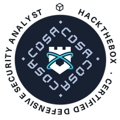
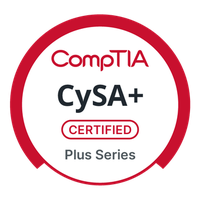

Antivirus deployment for BPS
Statistics Indonesia
Led a four-person team through the Bitdefender rollout, delivered to the service-level agreement, and trained the client team to run the platform after handover.
2,850 endpoints deployed
L2 Security Analyst · ITSEC Asia
I investigate escalated security incidents, hunt for threats in IBM QRadar, and tune Splunk detections for SOC teams.
3+ years in cybersecurity across banking, finance, government, and managed security services. My work covers security operations center (SOC) monitoring, incident response, detection engineering, and Python automation.
ITSEC Asia
QRadar · Trend Micro · CyberInt
Focus Solusi Infotama
Splunk · Python · CrowdStrike · ExtraHop · Ixia ThreatArmor · Bitdefender · Jira
CIMB Niaga Finance
SentinelOne · Kaspersky · PandaSecurity · CyberArk · Active Directory · VPN
Alpha Citra Siber Indonesia
Splunk · QRadar · Wazuh
Universitas Multimedia Nusantara
Desktop support · Antivirus · Account management
Statistics Indonesia
Led a four-person team through the Bitdefender rollout, delivered to the service-level agreement, and trained the client team to run the platform after handover.
2,850 endpoints deployed
Indonesia’s Directorate General of Customs and Excise
Advised on Python automation and Splunk dashboards. Detection tuning reduced false positives by 90% and supported audit readiness.
Alpha Citra Siber Indonesia
Triaged about 20 incidents per week across three managed clients and documented alert classification standards for use across analysts and shifts.

Hack The Box · Aug 2026

CompTIA · May 2025
The SecOps Group · Feb 2024
ADINUSA
Bachelor’s in Information Systems
Associate degree in Information Systems
I’m open to international L2 SOC analyst, detection engineering, and incident response roles. I’m based in Tangerang, Indonesia, and require visa sponsorship to relocate.
Indonesian (native) · English (intermediate)